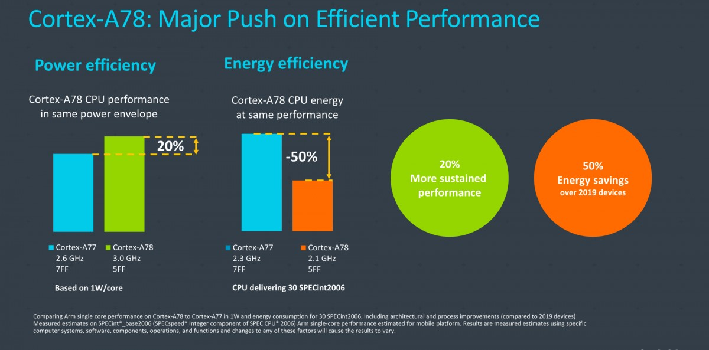

Exynos 1080 is Samsung's first 5nm chip with Cortex-A78 and Mali-G78 GPU
The successor to the Exynos 980 will be called the 1080 and a Samsung researcher unveiled the first details about it. Note that this isn’t Samsung’s top chip for 2021, instead it will be used in high-end 5G phones. vivo has first dibs and will probably used for an X-series phone (the vivo X60 says Ice Universe).
The Exynos 1080 is a 5nm chipset, though the exact details on the manufacturing process are not known for now. It will join the growing ranks of 5 nm chips, starting with the Apple A14 but also including the Snapdragon 875, Kirin 9000 and Samsung’s own flagship chipset (the Exynos 2100).
The Exynos 1080 will feature Cortex-A78 cores, replacing the A77 found inside its predecessor. According to ARM’s official numbers, the A78 running at 2.1 GHz can deliver 20% more performance in the same power envelope than an A77 at 2.3 GHz. You can expect the new Samsung chip to perform a little better than that as the Exynos 980 actually ran its A77 cores at 2.2 GHz.
For the GPU, the natural choice is the Mali-G78. That’s two generations newer than the G76 used in the 980 chip, so the result should be a noticeable
boost in performance and efficiency, though that will depend on the configuration that Samsung uses (the 980 GPU had five cores).
